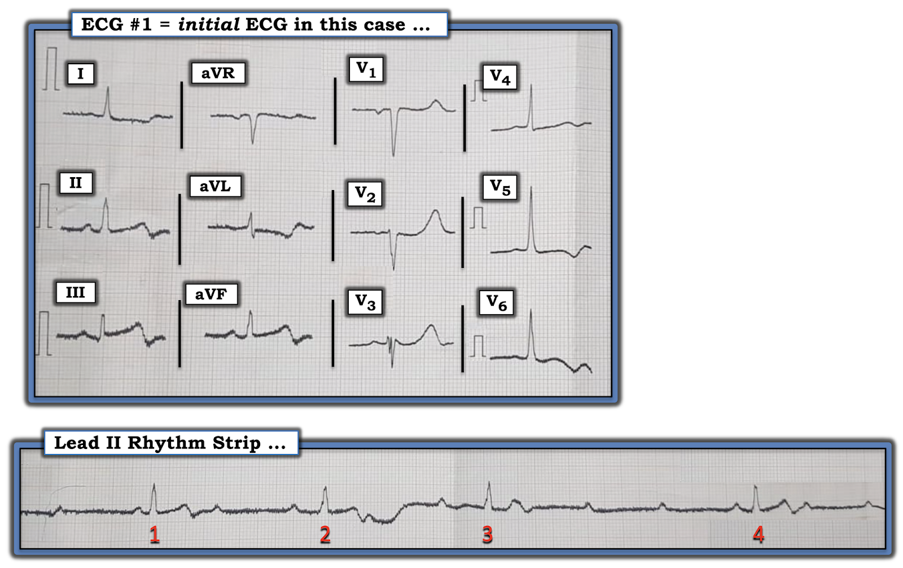
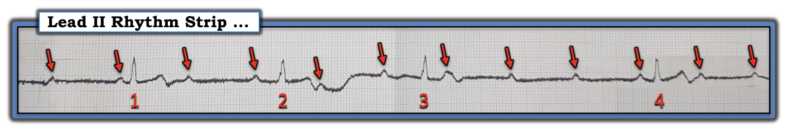
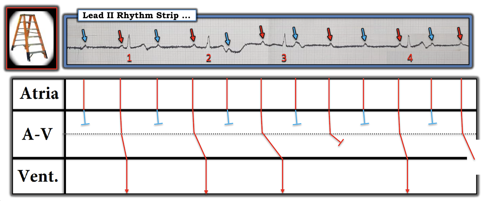

ECG Blog #226 (42) — Một dạng biến thiên của blốc AV hoàn toàn?
Ca bệnh hôm nay được gửi đến tôi — với thông tin duy nhất tôi nhận được là ý kiến cho rằng điện tâm đồ này thể hiện "một dạng biến thiên của blốc AV hoàn toàn".
- BẠN sẽ diễn giải điện tâm đồ ở Hình 1 như thế nào?
- Nhịp ở đây là gì?


=======================================
LƯU Ý: Câu trả lời chi tiết của tôi cho ca này nằm bên dưới Video PEARL dài 11 phút này.
- Với những ai muốn có "câu trả lời nhanh hơn" — bạn có thể tìm thấy ở bên dưới, trong Hình 2, 3 và 4.
=======================================

ECG Media PEARL #42 (Video dài 11:00 phút) hôm nay — Xem xét điện tâm đồ 12 chuyển đạo và dải nhịp DII dài trình bày ở Hình 1. Liệu nhịp này có phải là "một dạng biến thiên của blốc AV hoàn toàn?"
Câu trả lời "nhanh hơn" cho Hình 1
Điện tâm đồ duy nhất tôi nhận được là bản ở Hình 1.
- Tôi không phải là "người hâm mộ" các điện tâm đồ 12 chuyển đạo chỉ hiển thị một phức bộ đơn lẻ, rời rạc như trong hình này. Một lý do là chuyển đạo II trên bản 12 chuyển đạo có thể gợi ý nhịp xoang (như chúng ta thấy ở đây trong Hình 1) — nhưng dải nhịp chuyển đạo dài lại kể cho chúng ta một câu chuyện rất khác.
- Tôi bàn chi tiết về nhịp ở bên dưới (trong Hình 2 và Hình 3). Trước mắt, điều quan trọng để diễn giải điện tâm đồ 12 chuyển đạo — là phức bộ QRS thì hẹp. Do đó, nhịp này là nhịp trên thất — nghĩa là chúng ta có thể đánh giá điện tâm đồ này để tìm các thay đổi ST-T cấp hoặc mới xảy ra.
Điện tâm đồ 12 chuyển đạo ở Hình 1 cho thấy hình ảnh có vẻ là một nhồi máu cơ tim thành dưới mới xảy ra. Lưu ý các điểm sau:
- Sóng ST-T tối cấp ở từng chuyển đạo (II, III, aVF) thành dưới — với sóng T nhọn nổi bật kết thúc bằng phần cuối âm. ST chênh lên rõ nhất ở chuyển đạo III, và có lẽ vẫn còn ở chuyển đạo aVF — nhưng không thấy ở chuyển đạo II.
- ST chênh xuống soi gương ở chuyển đạo aVL — trong đó sóng ST-T ở chuyển đạo aVL cho thấy hình ảnh đối nghịch như soi gương chính xác với sóng ST-T chênh lên ở chuyển đạo III (Xem ECG Blog #184 để biết thêm về mối liên hệ "kỳ diệu" giữa chuyển đạo III và aVL).
- Sóng ST-T chênh xuống soi gương ở mức độ ít hơn ở chuyển đạo I.
- Sóng ST-T trông có vẻ tối cấp ở các chuyển đạo trước V1, V2 và V3 — kết thúc bằng sóng T cao hơn và "đầy đặn hơn mức bình thường". Trong bối cảnh nhồi máu cơ tim thành dưới mới xảy ra mà chúng ta vừa chẩn đoán — những thay đổi ở các chuyển đạo trước này gợi ý nhồi máu cơ tim thành sau mới xảy ra, hiện đang cho thấy sự tiến triển của biến cố với sóng ST-T tái tưới máu.
- Tăng tiến sóng R kém. Tuy vậy — có một biến thiên dương ban đầu (sóng r) ở chuyển đạo V2 và V3 — nên các phức bộ này không đủ tiêu chuẩn là sóng Q, và chúng ta không thể chẩn đoán nhồi máu thành trước. Thấy rõ phức bộ QRS phân mảnh ở chuyển đạo V3 (với mức phân mảnh ít hơn ở nhánh xuống của sóng S ở chuyển đạo V2).
- Nửa chuẩn ở các chuyển đạo V4,5,6 — nghĩa là biên độ sóng R tăng (~30 mm ở V5; ~25 mm ở V6) đủ tiêu chuẩn LVH. Sóng ST-T bất thường ở các chuyển đạo ngực bên này có lẽ phản ánh sự kết hợp giữa "tăng gánh" thất trái và thiếu máu cục bộ do biến cố mới xảy ra.
- NHẬN ĐỊNH về điện tâm đồ 12 chuyển đạo: Không có thông tin về tính chất hay khung thời gian của triệu chứng — thì không thể ước tính thời điểm khởi phát của biến cố này. Nhưng điện tâm đồ 12 chuyển đạo ở Hình 1 gợi ý mạnh mẽ đã có một nhồi máu cơ tim dưới-sau mới xảy ra, có thể mới khởi phát chỉ vài giờ trước — hoặc — có lẽ một hay 2 ngày trước. Mức ST chênh lên tối thiểu, cùng với phần cuối sóng T âm ở các chuyển đạo dưới + phần cuối sóng T dương ở chuyển đạo aVL + sóng T trước tim "quá đầy đặn" — kết hợp lại gợi ý sự tiến triển của nhồi máu cơ tim dưới-sau mới xảy ra này, với điện tâm đồ hiện cho thấy hình ảnh có vẻ là thay đổi sóng ST-T tái tưới máu.
Chuyển sang Dải nhịp DII dài:
- Theo cách tiếp cận Ps, Qs & 3Rs (được ôn lại trong ECG Blog #185) — Sóng P xoang (tức là sóng P dương ở chuyển đạo II) có hiện diện — phức bộ QRS hẹp — và (về 3R) — mặc dù nhịp nhĩ đều (các mũi tên ĐỎ trong Hình 2) — nhịp thất chậm lại không đều. Một số sóng P rõ ràng là không được dẫn truyền — và khoảng PR trước các phức bộ QRS không giữ nguyên.


ĐIỂM THEN CHỐT #1: Mặc dù khoảng PR thay đổi — tôi lập tức nghi ngờ rằng nhịp này không phải là blốc AV hoàn toàn, vì khoảng R-R rõ ràng không đều.
- Vì tần số của nhịp "thoát" có xu hướng đều (hoặc ít nhất là gần như đều) — việc phát hiện nhịp thất không đều rõ ràng (như thấy ở Hình 2) gợi ý rằng blốc AV không hoàn toàn.
- Nếu một số sóng P xuất hiện đều đặn không được dẫn truyền — nhưng nhịp đang xét không phải là blốc AV độ 3 (tức là hoàn toàn) — thì chúng ta đang đối mặt với một dạng nào đó của blốc AV độ 2.
ĐIỂM THEN CHỐT #2: Ở bệnh nhân có bằng chứng nhồi máu cơ tim thành dưới mới xảy ra — đại đa số các trường hợp blốc AV độ 2 rốt cuộc sẽ là một dạng nào đó của Wenckebach AV (tức là Mobitz I). Điều này càng đúng khi phức bộ QRS hẹp (như ở Hình 2).
ĐIỂM THEN CHỐT #3: Việc khoảng ngưng trên dải nhịp ngắn này kết thúc bằng một phức bộ QRS có khoảng PR bình thường — gợi ý rằng nhát #4 được dẫn truyền.
- Việc khoảng PR trước nhát #4 có vẻ bằng khoảng PR trước nhát #1 — gợi ý rằng ít nhất 2 trong 4 phức bộ QRS trên bản ghi này có lẽ được dẫn truyền.
ĐIỂM THEN CHỐT #4: Cơ chế của nhịp ở Hình 2 rõ ràng là phức tạp. Nhưng NẾU chúng ta có thể dựng được một giản đồ bậc thang (laddergram) hợp lý — thì có thể chúng ta sẽ tìm ra một cơ chế hợp lý cho nhịp này.
- Xét đến các điểm nêu ra trong ĐIỂM THEN CHỐT #1, 2 và 3 (ở trên) — cộng với — nhận thức rằng Wenckebach AV có thể xảy ra ở nhiều hơn một tầng trong nút AV — đã gợi ý cho tôi khả năng có blốc hai tầng ở đường ra nút AV.
Vẽ GIẢN ĐỒ BẬC THANG:
Phần xem xét từng bước Giản đồ bậc thang mà tôi đề xuất, trình bày ở Hình 3, được minh họa trong Video PEARL ở trên. Tóm tắt ngắn gọn như sau:
- Đường chấm đen nằm ngang chia 2 tầng blốc trong Tầng Nút AV.
- Để dễ hiểu — tôi đã đánh dấu bằng mũi tên ĐỎ những sóng P ở Hình 3 mà tôi tin là có đi qua được tầng trên trong nút AV. Tôi dùng mũi tên XANH để chỉ những sóng P không đi qua được tầng trên này. Lưu ý rằng giả thuyết của tôi đề xuất rằng cứ cách một sóng P lại có một sóng đi qua được tầng nút AV trên.
- Trong số các sóng P màu ĐỎ có đi tới được tầng nút AV dưới — Lưu ý rằng có sự kéo dài tăng dần của thời gian cần để đi qua tầng nút AV dưới — cho đến khi sóng P ĐỎ thứ 4 không được dẫn truyền. Sóng P kế tiếp (tức là sóng P ĐỎ thứ 5 ở Hình 3) lại có thể dẫn truyền — và chu kỳ bắt đầu lại.
- NHẬN ĐỊNH: Nhịp ở Hình 3 là blốc AV độ 2 với Wenckebach hai tầng ở đường ra nút AV. Có dẫn truyền AV 2:1 ở đường ra tầng nút AV trên — và dẫn truyền Wenckebach 4:3 ở đường ra tầng nút AV dưới.


==================================
Lời cảm ơn: Tôi xin cảm ơn Abdullah Al Mamum (từ Dhaka, Bangladesh) đã cho phép tôi sử dụng ca bệnh và bản ghi này.
==================================
Các bài ECG Blog liên quan đến ca hôm nay:
- ECG Blog #185 — Cách tiếp cận hệ thống để diễn giải nhịp.
- ECG Blog #188 — Ôn lại CÁCH đọc và vẽ Giản đồ bậc thang.
- ECG Blog #184 — Ôn lại mối liên hệ giữa chuyển đạo 3 và chuyển đạo aVL "kỳ diệu" trong OMI cấp (nhồi máu cơ tim do tắc — Occlusion-based Myocardial Infarction).
- ECG Blog #224 — Ôn lại một ca trong đó nhịp theo nhóm (group beating) + nhồi máu cơ tim thành dưới cấp gợi ý mạnh mẽ Mobitz I là nguyên nhân.